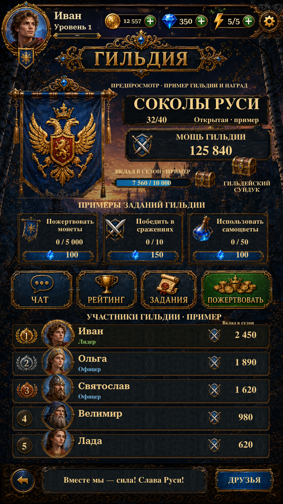

Implemented the shared Home header, source navigation cards with Russian lettering, revised guild summary/progress and roster geometry, approved gems/potion, and safe-edge navigation. Original title, banner and portrait assets remain.
Actual Unity captures below. Guild membership, progress, tasks, roster and rewards remain labelled examples. Chat, Ranking, Friends and Back retain their routes; unavailable guild actions explain their status. English has live localized labels. Reconstructed surfaces and the reused footer are not exact reference reproductions.

Actual Unity Play Mode capture, isolated save and simulated screen/safe area.
Implementation and checks · Remaining differences · Asset alpha inspection